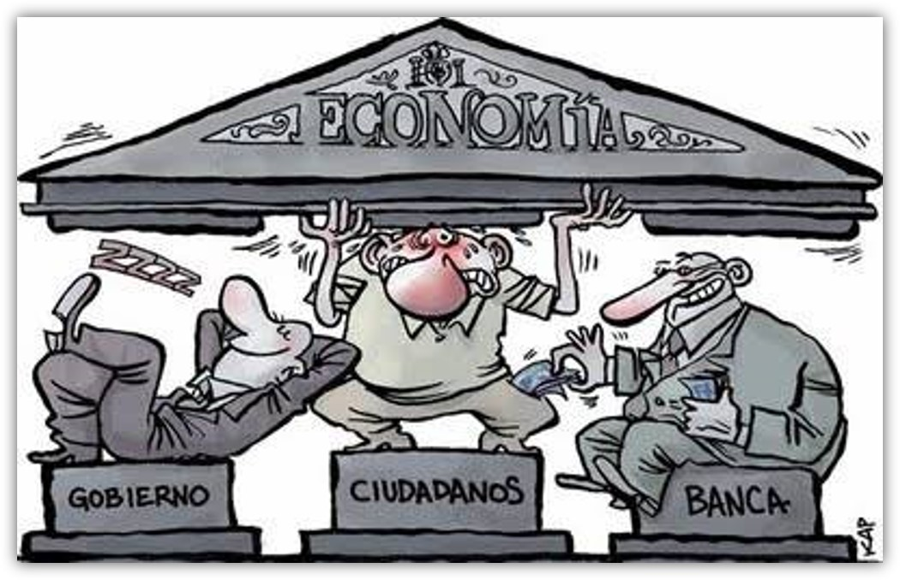

Hecho por Carlos Rodriguez, Fatima Mones, Itzel Briseño, Dalton Akenaton y Misael Hernandez

importancia economica que tiene la informacion y el regimen juridico aplicable
Valoración económica de la información
¿Como la información se convierte en un activo económico?
La información se convierte en un activo económico principalmente a través de su capacidad para generar valor y facilitar la toma de decisiones.
Las organizaciones están buscando cada vez más convertirse en empresas orientadas a los datos, basando sus decisiones en evidencias concretas en lugar de opiniones.
la información se convierte en un activo económico a medida que se desarrollan tecnologías y plataformas para su análisis y utilización
¿Cómo se valora en diferentes contextos empresariales?
- Ventaja competitiva
- Seguridad de la información
- Seguridad de la información
- Valor económico
Modelos de negocios basados en la información
Los modelos de negocio basados en datos representan una forma innovadora de generar valor empresarial utilizando el análisis de grandes cantidades de datos digitales. A continuación, se presentan algunos puntos clave sobre los modelos de negocio basados en datos, utilizando la información proporcionada
- Diferencia entre modelos de negocio basados en datos y modelos de negocio digitales
- Funciones de las empresas en modelos de negocio basados en datos
- Variantes de modelos de negocio basados en datos
- Oportunidades y riesgos
- Requisitos legales
El impacto financiero de la información en la toma de decisiones
La información fiscal y financiera desempeña un papel fundamental en la toma de decisiones empresariales
- proporciona una base sólida para evaluar el rendimiento pasado y presente de la empresa
- cumplir con las obligaciones fiscales
- identificar oportunidades y amenazas
- atraer inversores y socios
- planificar estratégicamente el futuro
Impacto de la protección de datos en la economía
El desarrollo tecnológico, en especial el big data, ha creado una economía basada en los datos en la que intervienen diferentes sujetos, integrados en un proceso complejo que tiene como resultado una mejora económica basada en la innovación. Se pueden obtener los datos de los sujetos de diferentes formas: en primer lugar, con el consentimiento expreso de un sujeto, normalmente en el marco de una relación contractual, para obtener determinados bienes o servicios, En segundo lugar, no solo la cesión consciente y consentida es fuente de información para las empresas; cualquier actividad de los sujetos en el ámbito digital deja un rastro en forma de datos que puede ser utilizado por las empresas que operan en internet y que tienen la capacidad y la tecnología suficientes para procesar la información.
El propósito de una legislación de protección de datos personales no es sólo establecer medidas de protección de datos, sino que es primordial que la legislación genere confianza a los consumidores en la economía digital. Los riesgos que se pueden provocar hoy en dia emerger riesgos asociados a distintos ámbitos, como la vulneración a la privacidad de las personas, la pérdida de oportunidades de negocios por bajas garantías a la seguridad de la información o el monopolio creciente por parte de compañías transnacionales
Es deber de los Estados garantizar que el uso de los datos personales esté regulado dentro de un marco jurídico que establezca un mínimo equilibrio entre los intereses de las empresas y el de los ciudadanos. Si el uso de datos personales por parte de una organización es muy intrusivo, entonces el Estado debe adoptar medidas apropiadas
Con frecuencia no se presta mucha atención a la seguridad y privacidad cuando se diseñan dispositivos inteligentes, pudiendo ser estos fácilmente “pirateables”.
Por ejemplo, un temor recurrente por parte de usuarios de altavoces inteligentes como Alexa de Amazon, es que este dispositivo grabe conversaciones privadas. La brecha de seguridad se refiere a: “parte de un software, secuencia de datos o de comandos que se aprovecha de un error, de una falla o de una vulnerabilidad para producir un comportamiento involuntario o inesperado en un programa informático, un soporte físico, o algo electrónico”.
En este sentido, en México el derecho a la protección de datos personales4 tiene un fundamento y protección de carácter constitucional, al ser reconocido en la Carta Magna en el artículo 16, segundo párrafo, que a la letra señala
Artículo 16
Toda persona tiene derecho a la protección de sus datos personales, al acceso, rectificación y cancelación de los mismos, así como a manifestar su oposición, en los términos que fije la ley, la cual establecerá los supuestos de excepción a los principios que rijan el tratamiento de datos, por razones de seguridad nacional, disposiciones de orden público, seguridad y salud públicas o para proteger los derechos de terceros.
En lo que respecta al ámbito privado, es decir, cuando los datos personales están en posesión de un particular resulta aplicable la Ley Federal de Protección de Datos Personales en Posesión de los Particulares, la cual, de conformidad con su artículo 1 es “de orden público y de observancia general en toda la República y tiene por objeto la protección de los datos personales en posesión de los particulares, con la finalidad de regular su tratamiento legítimo, controlado e informado, a efecto de garantizar la privacidad y el derecho a la autodeterminación informativa de las personas
Riesgos económicos de la brecha de datos y la ciberseguridad
una brecha de dato consiste en la sustracción de información por parte de un ciberdelincuente
una brecha de datos es un incidente de ciberseguridad que involucra a un ente malicioso obteniendo acceso no autorizado a datos privados.
¿Y cómo se produce una brecha de datos?
- Una filtración accidental
- Un infiltrado malicioso
- Dispositivos perdidos o robados
- Ataques externos maliciosos
Y en las empresas más habituales son
- Robos físicos
- Uso de información no autorizado
- Malware
- Ingeniería social, etc
riesgos económicos de la brecha de datos
- Pérdida de datos confidenciales
- Los Costos de Recuperación de los datos
- Demandas legales por parte de los clientes
- La imposición de multas y sanciones por parte de las autoridades reguladoras.
- Pérdida de clientes existentes y dificultades para atraer a nuevos clientes en el futuro.
Las Fases de una brecha de datos
- Examinación
- Entrada
- Exfiltración
¿Cómo cuidar a las empresas de estos riesgos?
- Evaluación exhaustiva de terceros
- Establecimiento de acuerdos contractuales sólidos
- Monitorización continua